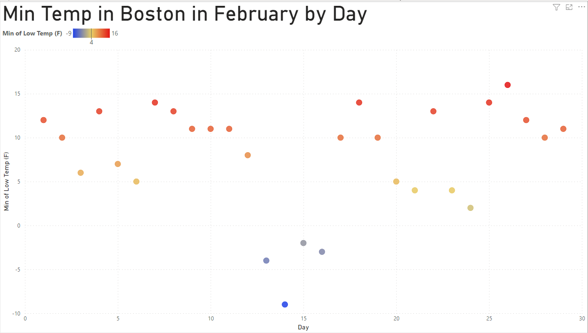
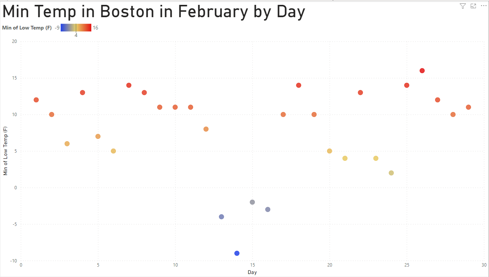

Attribute: Categorical (Which Party the Electoral Votes
would have gone to)
This is a great choice and use of the channel. Since this
visualization is helping us see theoretical electoral vote
distribution across the country, it makes the most sense for the
visualization to be a map of the U.S. which each of the states
represented by a color representative of the party of the
winning candidate. This makes the visualization easy to understand.
Colormap
Categorical (Blue and Red)
Attribute: Categorical (Which Party the Electoral Votes
would have gone to)
As stated in the Channel section, this is a great color map choice.
It clearly illustrates the dichotomy of choice in the major presidential
election.
Marks
Points
Channels
Channel: Color
Attribute: Diverging (LWTS scoring value of batted balls)
This is a helpful choice of channel, but could be executed better.
It illustrates the idea that ball quality can range from below to above average,
not just average to really great. However, the color choices representing the
2 extremes may not be accessible to all users. Additionally, pink and orange
do not typically connote opposites, so it may be more prudent to pick more
disparate colors at opposite ends of the color wheel. It may also be a better idea
to pick darker colors so that the difference in tint/gradient is more pronounced.
As it stands, all of the colors are quite bright, which can be difficult to discern.
Channel: Horizontal Position
Attribute: Sequential (exit velocity in mph)
This seems like a reasonable channel choice. The point
of this visualization is to compare the quality of a batted ball
based on its exit velocity and launch angle. Plotting these
two factors on the x and y axis is one way to visualize the
"sweet spot" balance of these two factors to bat the optimal ball.
One thing that could be considered as an alternative is to instead
visualize the exit velocity by literally plotting points with their velocity
acting as the distance relative to the origin (0,0). This could help as a more
literal path of where the ball goes may be easier for industry professionals
to understand, where as this traditional x and y axis scatter plot is
more accessible to everyone.
Channel: Vertical Position
Attribute: Diverging (launch angle)
This seems like a reasonable channel choice. The point
of this visualization is to compare the quality of a batted ball
based on its exit velocity and launch angle. Plotting these
two factors on the x and y axis is one way to visualize the
"sweet spot" balance of these two factors to bat the optimal ball.
One thing that could be considered as an alternative is to instead
visualize the launch angle by literally plotting points by their launch
angle relative to the origin (0,0). This could help as a more
literal path of where the ball goes may be easier for industry professionals
to understand, where as this traditional x and y axis scatter plot is
more accessible to everyone.
Colormap
Diverging (ranging from Orange and Pink extremes)
Attribute: Diverging (LWTS scoring value of batted balls)
As stated in the Channel section, this is good colormap concept choice, but
could have improved execution. We need a way to represent below and above average
balls where we can easily differentiate above average from below average. However,
the 2 extremes being orange and pink and all hues being relatively bright can
make the differences hard to discern on certain displays or with certain users.
To make the visualization more accessible, the two extremes should be darker hues
that are opposites on the color wheel. For example, the blue and red from
the above visualization would be great choices to represent two opposite extremes.
Marks
Points
Channels
Channel: Color
Attribute: Diverging (Temperature)
This is a solid choice for representing the range of temperatures. It does a good job of showing
where the temperatures are generally, letting a user draw conclusions from the graph. It also displays outliers very well, as abnormally low temperatures are a very different color than others.
Channel: Vertical Position
Attribute: Divergent (Temperature)
The vertical position is also representative of temperature. The color serves to highlight the
general magnitude of the temperature, while the vertical position shows its exact value. This is a good
choice to represent temperature, as it is very clear which temperatures are higher than others. It also
shows slight variations in temperature, wheras color displays a more general view of the data.
Channel: Horizontal Position
Attribute: Sequential (Date)
The horizontal position represents the day of the month the minimum temperature was recorded on. This shows that the minimum temperature stayed fairly consistent over the years, with only one cold spell occuring
in mid February. This is a good way to represent date, as it shows time in a very linear and easy to understand way.
Colormap
Diverging (Ranging from red to blue extremes)
Attribute: Diverging (Temperature)
This is a good mapping for temperature, however it maybe slightly decieving to a reader as the temperature does not rise above 15 degrees. If a user does not look at the scale, they may think the minimum temperature is higher than it really is for a given day. Despite this, the color can give the user a good
idea of the minimum temperature on a given day.

 
